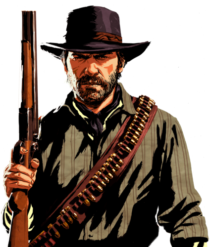
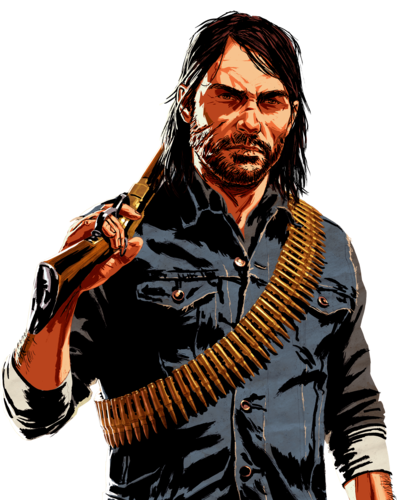
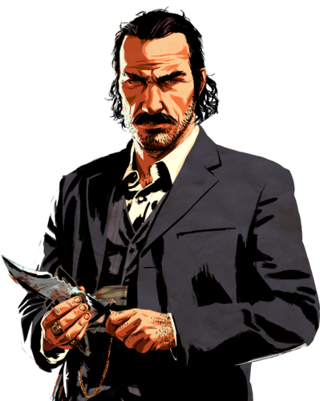

Артур Морган родился примерно в 1863 году в семье Беатрис и Лайла Морганов.
Его мать умерла, когда Артур был совсем маленьким, а его отец был мелким преступником и был арестован за воровство в 1874 году, когда Артуру было 11 лет.
В какой-то момент отец Артура Лайл был убит, и в память о нём Артур стал носить его шляпу.
Новости
Джон Марстон родился в 1873 году. Его отец был неграмотным шотландским иммигрантом, родившимя на корабле, плывущем в Нью-Йорк.
Мать Джона была проституткой и скончалась во время родов. В какой-то момент отец Джона ослеп на оба глаза в результате драки в баре к югу от Чикаго.
Он любил говорить о Шотландии и ненавидел англичан за то, что они сделали с его двоюродными дедушками и бабушками, которых он, впрочем, никогда не видел.
Оценки
Персоонажи

Артур Морган
Артур Морган родился примерно в 1863 году в семье Беатрис и Лайла Морганов.
Его мать умерла, когда Артур был совсем маленьким, а его отец был мелким преступником и был арестован за воровство в 1874 году, когда Артуру было 11 лет.
В какой-то момент отец Артура Лайл был убит, и в память о нём Артур стал носить его шляпу.

Джон Мартсон
Джон Марстон родился в 1873 году. Его отец был неграмотным шотландским иммигрантом, родившимя на корабле, плывущем в Нью-Йорк.
Мать Джона была проституткой и скончалась во время родов. В какой-то момент отец Джона ослеп на оба глаза в результате драки в баре к югу от Чикаго.
Он любил говорить о Шотландии и ненавидел англичан за то, что они сделали с его двоюродными дедушками и бабушками, которых он, впрочем, никогда не видел.

Датч Вандерлинд
Артур Морган родился примерно в 1863 году в семье Беатрис и Лайла Морганов.
Его мать умерла, когда Артур был совсем маленьким, а его отец был мелким преступником и был арестован за воровство в 1874 году, когда Артуру было 11 лет.
В какой-то момент отец Артура Лайл был убит, и в память о нём Артур стал носить его шляпу.